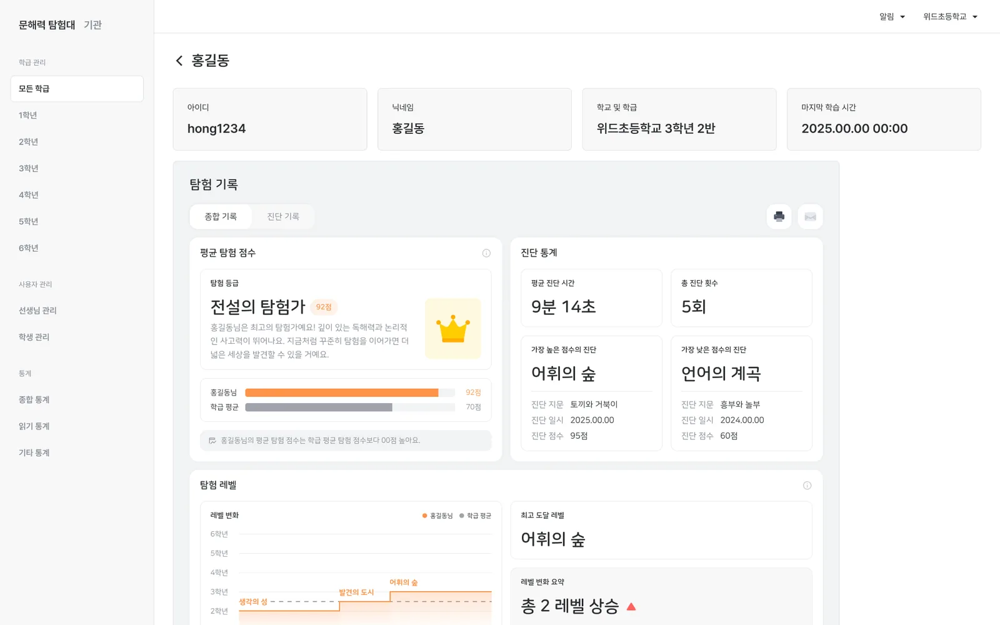
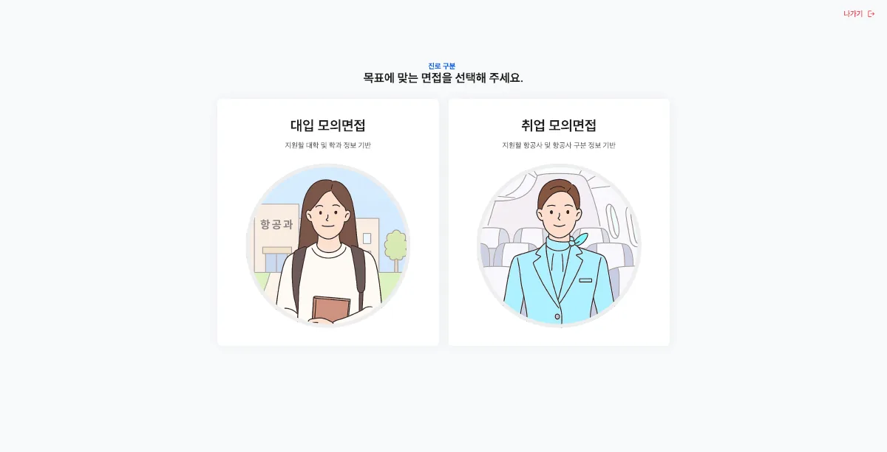
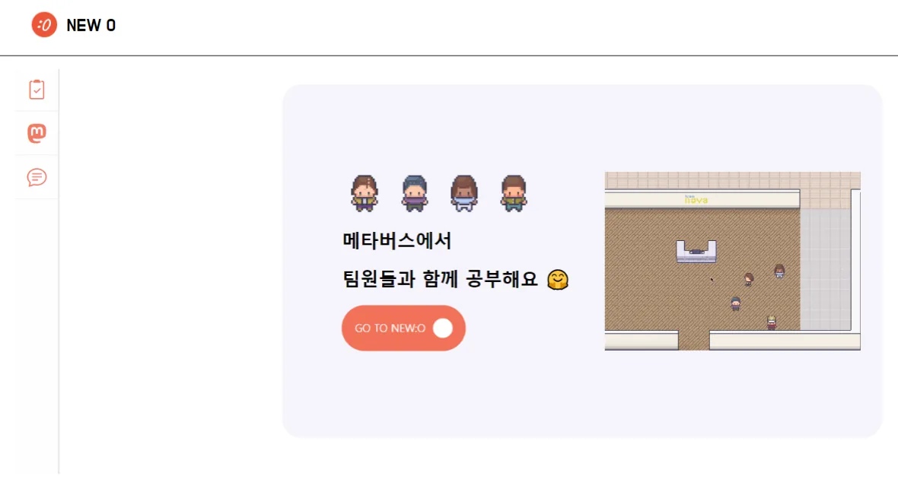
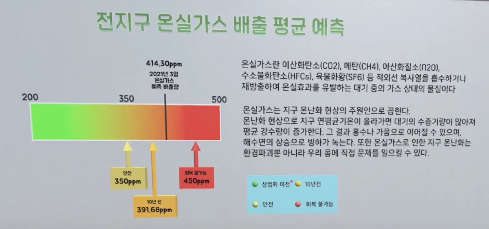
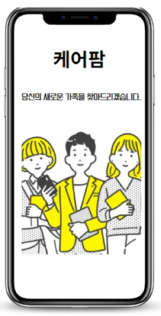
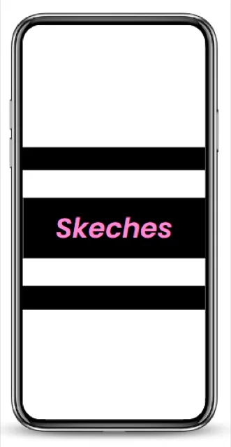

all stages
▲ 처음으로
작업 목록
맡았던 역할과 해결한 문제를 중심으로 정리했습니다.
-

-

-

side quests
개인 작업물
-

뉴오
도트 그래픽 메타버스 오피스 · 창업 프로젝트
-

메타버스 에너지 전시관
에너지 데이터를 걸어 다니며 보는 가상 전시관 · 공모전 장려상
-

케어팜
간병인 매칭과 요양 시설 검색 안드로이드 앱 · 1인 개발
-

스케치스
스케치 자료를 정리하는 안드로이드 앱 · 1인 개발
character
소개
정유리
frontend developer
실제로 잘 쓰이는 화면을 만드는 개발자입니다.
보기 좋은 화면만큼, 현장에서 안정적으로 사용할 수 있는지도 중요하게 생각합니다.
동물병원 모니터링 화면과 장애인 채용 서비스를 만들며, 작은 불편이 서비스 전체의 사용성을 바꿀 수 있다는 점을 배웠습니다.
- Web Accessibility
- AI Service Integration
- Real-time Interface
- Responsive UI
- Cross-functional Communication
- 생년월일
- 1998.10.02
- 학력
- 학점은행제 졸업
inventory · skills
Frontend
- HTML · CSS
- JavaScript
- TypeScript
- React
- Vite
Mobile
- Flutter · Dart
- Android · Java
Backend · Data
- Firebase
- Java Spring
- MySQL
- PHP
- TCP
AI · Interactive
- Gemini API
- Speech recognition
- Unity · C#
- Phaser.js
quest log
경력
2025.07 — 현재
in progress(주)위드마인드
Frontend Developer
2022.09 — 2025.02 (2년 6개월)
clear(주)젠트리
Frontend Developer
- 수의사용 모니터링 앱 화면 개발 (Flutter)
- 공식·관리자 웹사이트 개발
2022.03
award한전KDN 아이디어 공모전
장려상 (메타버스 에너지 전시관)
2022.02 — 2022.06
clear뉴오
메타버스 오피스 창업 프로젝트 (백엔드 40% · 프론트엔드 30% · 아이디어 30%)
희망연봉3,800만원 이상 (협의)